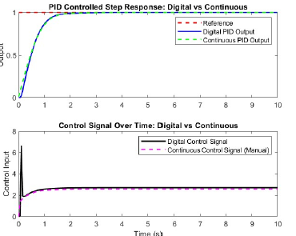
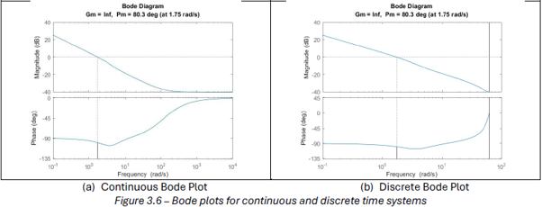
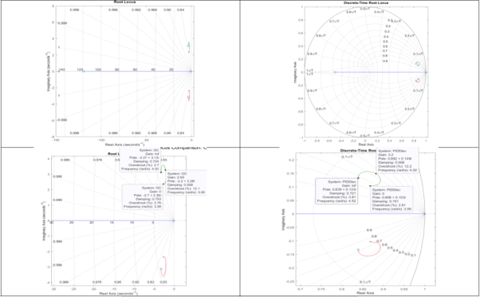
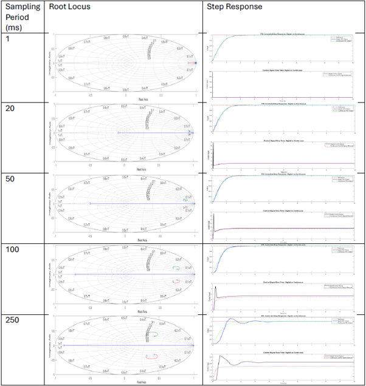
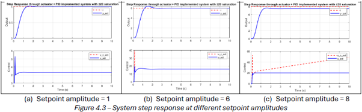
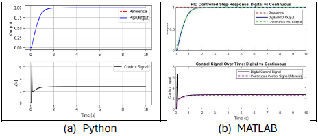

1. Design Objective
The objective was to design and validate a digital controller for the short-period dynamics of a DC-8 aircraft model. The controller had to preserve closed-loop stability while meeting time-domain requirements for rise time, settling time, overshoot, and steady-state error.
The work progressed from a continuous-time plant model to a discrete implementation, then tested whether the controller remained robust when practical effects were included: finite sampling, actuator lag, control saturation, and increased command amplitude.
Alongside these standard measures, performance indices were used to compare tracking error, control-energy demand, and the rate of control action.

2. Discretisation & Sampling Time
The original continuous-time aircraft model was converted into a discrete-time representation for digital control. Sampling frequency was selected from the closed-loop bandwidth rather than the absolute highest-frequency content alone, ensuring the controller captured the useful aircraft dynamics without creating unnecessary computational burden.
With a closed-loop bandwidth of approximately \(4.55\ \mathrm{rad/s}\), the selected sampling frequency was 20 Hz, corresponding to:
Bode, Nyquist, and step-response comparisons showed that the 20 Hz discrete model reproduced the relevant continuous-time dynamics closely. Lower sampling around \(10BW\) began to introduce visible magnitude and phase deviation before the important stability region, while the 20 Hz implementation remained an efficient and accurate choice.
3. Digital PID Implementation
The discrete aircraft model was implemented as a linear difference equation, allowing the output at each sample to be calculated from previous input and output states.
A discrete PID controller generated the control action from proportional, integral, and derivative terms. The controller continuously compared the reference command with the measured output and updated the input at each sampling instant.
The derivative term improved response speed and damping, but it also introduced an important practical trade-off: abrupt step commands can create a large initial derivative kick, particularly at small sampling times. This was evaluated using control-effort metrics rather than considering tracking performance alone.


4. PID Tuning & Stability
Three PID design approaches were compared: root-locus pole placement, MATLAB PID Tuner initialisation, and iterative tuning based on time-domain response and control-effort metrics.
The final controller used the iterative design because it gave the strongest balance between response quality and practical control effort:
With this controller, the continuous and discrete systems both met the required performance criteria. The discrete implementation achieved approximately 0.93 s rise time, 1.66 s settling time, zero overshoot, and zero steady-state error.
Root-locus analysis confirmed stability across positive gain values: continuous poles remained in the left-half \(s\)-plane, while discrete poles remained within the unit circle in the \(z\)-plane. Bode analysis also showed closely matched stability behaviour between continuous and discrete implementations.
5. Control-Effort Trade-Offs
Controller performance was evaluated using standard tracking and control-effort indices, not just rise time and overshoot. This matters because an excessively aggressive response can demand unrealistic actuator motion or increase energy use.
The chosen controller delivered lower tracking-error indices than the initial root-locus design and significantly lower control-rate demand than the more aggressive MATLAB PID Tuner solution. It therefore achieved the best overall compromise between fast tracking, no overshoot, and manageable actuator demand.

6. Sampling-Time Robustness
The final digital controller was tested across sample periods of 1 ms, 20 ms, 50 ms, 100 ms, and 250 ms. The analysis demonstrated the expected compromise between discrete approximation accuracy, control-signal smoothness, and computational cost.
Increasing sample time introduced additional effective phase lag. The controller was therefore acting on increasingly outdated information, producing larger corrections, increased overshoot, and poorer tracking.
At 250 ms, the system no longer met the 1.8 s settling-time requirement and overshoot increased to approximately 15%.
Very small sample periods improved tracking metrics, but amplified derivative kick because the derivative approximation divides the error difference by \(T_s\). This greatly increased control-rate demand and could contribute to actuator wear in a physical system.
7. Actuator Dynamics & Saturation
A first-order actuator model was introduced to move beyond the ideal-actuator assumption and evaluate practical implementation effects:
The additional actuator pole introduced lag and made the combined system third order after discretisation. At the nominal setpoint, the actuator created only a small increase in overshoot to around 2%, while preserving zero steady-state error and maintaining compliance with the original design criteria.
Control saturation was then applied at \(u_c = \pm20\). Small command amplitudes remained within this limit, but larger setpoints caused the actuator to saturate. At a setpoint amplitude of 8, the available actuator authority was insufficient to reach the reference command, producing a large steady-state error.

8. Anti-Windup Design
Once the actuator saturated, the integral term could continue accumulating error even though the actuator could not provide additional control effort. This is known as integral windup and can lead to slow recovery, unnecessary overshoot, and degraded transient response.
Two anti-windup strategies were tested: integral clamping and back-calculation. Clamping could perform well when manually tuned for a particular command amplitude, but its fixed limit made it less adaptable across different conditions.
Back-calculation was selected as the more robust method because it feeds the difference between saturated and unsaturated control effort back into the integrator, allowing it to unwind smoothly after saturation.
With back-calculation anti-windup, the system could tolerate command amplitudes up to approximately 7.5 before violating the performance requirements, compared with around 3.2 without the mitigation.
9. Python Verification
The complete discrete controller was independently reimplemented in Python to remove dependence on MATLAB. The Python script included system discretisation, PID logic, performance-index calculations, saturation, and anti-windup behaviour.
Python reproduced MATLAB's discrete closed-loop response closely. For the nominal controller, the Python implementation achieved a 0.90 s rise time and 1.70 s settling time, compared with 0.93 s and 1.66 s respectively in MATLAB.
This validation showed that the approach could be transferred into an open-source, reproducible workflow suitable for wider integration without requiring proprietary control-system software.

Full Technical Report
Download the Assignment
The full report contains the plant model, discrete difference equations, PID tuning methods, stability analysis, sampling-time study, actuator modelling, anti-windup comparison, and Python validation workflow.
↓ Download Full Report (PDF) ← Back to Modules